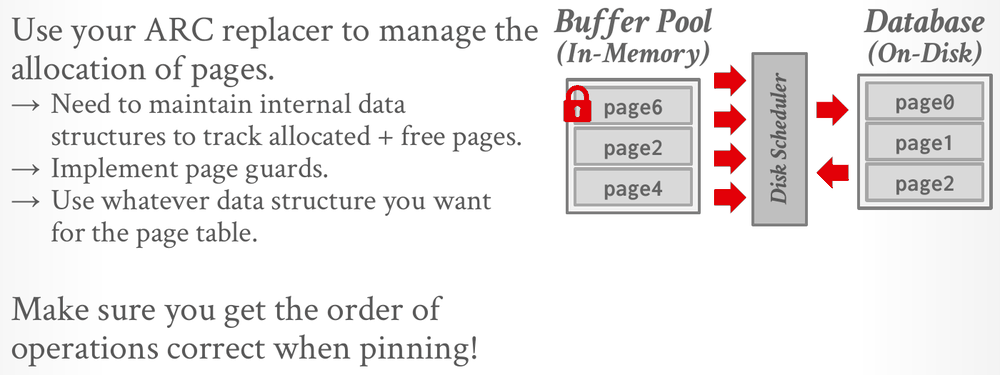

Database Internals in Go · Unit 2 · Lesson 6
P1.4 Page Guards: from RAII to defer
Build Project 1's read and write page guards, which hold a frame's latch and pin until an idempotent Drop gives both back, and explain how Go replaces C++ destructors and move semantics with defer, pointers and go vet.
BusTub's doc comment is blunt: the only way the system should interact with the buffer pool's page data is through page guards. A guard holds the two protections from Buffer Pools: a pin, so the page stays in its frame, and the frame's latch, shared or exclusive, so readers and writers don't collide. In C++, BusTub ties both to the guard's lifetime with a destructor. Go has no destructors, so this stage rebuilds the same guarantees from an explicit Drop, defer and a validity flag.
P1.1: an ArcReplacer tracks frames 4 and 5, both evictable, so Size() returns 2. The BPM calls SetEvictable(4, true) again, then RecordAccess(4, 9, AccessUnknown) for page 9, which frame 4 already holds. What does Size() return now?
Unit 2, Lesson 1: Lecture #04 separates locks from latches. Which statement describes a latch?
Unit 1, Lesson 2: tuple #3 is deleted from a slotted page, and the DBMS compacts the page by moving tuple #4 into the freed space. What happens to tuple #4's record ID?
What a guard holds
A guard gives access to one page. A ReadPageGuard shares the frame's latch with other readers, and in the doc comment's words, "the existence of any ReadPageGuard on a page implies that no goroutine can be mutating the page's data". A WritePageGuard holds the latch alone: while it exists, no other WritePageGuard and no ReadPageGuard for the same page can exist. The writeup calls both classes "RAII objects that provide thread-safe read / write access to the underlying pages".
Both types have the same fields: pageID, frame, replacer, bpmLatch, diskScheduler and isValid. The guard keeps pointers to the replacer and the buffer pool latch because, as the field comments say, "the buffer pool cannot know when this guard is dropped". When the guard lets go of the page, it has to finish the buffer pool's bookkeeping itself.
| Method | Status | Job |
|---|---|---|
newReadPageGuard, newWritePageGuard | yours | take the frame latch and build a valid guard |
PageID, Data, IsDirty, and DataMut on write guards | pre-built | panic on a nil or invalid guard, as BusTub's BUSTUB_ENSURE does |
Flush, on both guards | yours | write the page to disk now, keeping the guard |
Drop, on both guards | yours | give back the latch and the pin, once |
A write guard has to be exclusive because Data and DataMut return the frame's own []byte, not a copy. A writer changes the very bytes that readers look at. If writers shared the latch, a reader could copy a record halfway through an update, a Flush could send a half-updated page to disk, and two writers could interleave their changes.
#04 Memory Management, slides 10–11: the per-page metadata a guard maintains (pin counter, dirty flag) and the difference between locks and latches.
RAII in C++, Drop and defer in Go
In C++, BusTub's guards follow RAII (resource acquisition is initialization): the constructor acquires the latch, and the destructor calls Drop, which releases the latch and the pin. The destructor runs whenever the guard goes out of scope, whether the function returns normally, returns early or throws, so a caller can't forget to release the page.
Two more C++ rules keep that safe. The copy constructor is deleted, because two copies of a guard would release the same latch twice. Guards are moved instead. Move semantics let the move constructor and move assignment hand the pin and latch to a new object and leave the old one invalid, so the old one's destructor does nothing. BusTub's comments warn that a move has to update at least five fields on both objects, and that move assignment must first release whatever the target guard held. A default-constructed guard is invalid from the start. The writeup says not to attempt these methods "without having a solid understanding of how RAII and move semantics work".
Go has neither destructors nor moves. The Go port replaces the destructor with an explicit Drop, which the owner calls, usually with defer right after getting the guard. The ReadPageGuard doc comment shows the pattern:
guard, ok := bpm.CheckedReadPage(pageID, bufferpool.AccessUnknown)
if !ok {
return errNoFreeFrame
}
defer guard.Drop()A deferred call runs when the surrounding function returns, including when it panics. So defer gives back most of what RAII gave: one line, next to the acquisition, that an early return can't skip.
Drop must be idempotent: calling it on a guard that is already released does nothing. Three situations call it on a released guard:
- Code that gives the page back early with an explicit
Dropwhile a deferredDropstill runs at the end. BusTub'sDropTestcallsDropthree times on one guard. - A stale alias: a variable that still points at a guard after the guard has passed to a new owner, who dropped it. In Go, handing over a guard means copying its pointer, so the old variable keeps pointing at it.
- The zero value,
&ReadPageGuard{}, which plays BusTub's default-constructed guard.Dropdoes nothing on it and every other method panics.
The isValid flag provides the idempotency: Drop returns at once on an invalid guard, and otherwise clears the flag before it releases anything. Without that check, a second Drop releases the latch and the pin again, and what happens next depends on who else holds the frame. If nobody does, Go stops the program with fatal error: sync: RUnlock of unlocked RWMutex (Unlock of unlocked RWMutex for a write guard). recover can't catch it, so the whole test binary dies instead of one test failing. If another reader holds the page, the result is quieter and worse: the extra RUnlock releases that reader's share of the latch, and the extra unpin releases its pin. TestPageGuardSharedReadersPinCount catches exactly that: after r1.Drop() runs twice, the pin count is 0 and the frame is evictable while r2 is still reading.
A finalizer (runtime.SetFinalizer) can't stand in for a destructor. The garbage collector runs it at some point after the guard becomes unreachable, possibly never, while a latch has to be released as soon as its holder is done.
Why guards are pointers, and what go vet checks
A Go assignment copies a struct. If guards were values, g2 := g1 would make a second guard with its own isValid set to true, owning the same latch and pin, and dropping both would release them twice. C++'s deleted copy constructor exists to prevent that. So guards only ever travel as *ReadPageGuard and *WritePageGuard. All aliases of one pointer share a single isValid flag: the first Drop clears it, and every later Drop through any alias returns at once.
Both structs start with a _ noCopy field. noCopy is an empty struct with pointer-receiver Lock and Unlock methods, which makes the copylocks check of go vet treat any struct that contains it like a mutex and report every copy:
assignment copies lock value to g2: intro_to_db/bufferpool.ReadPageGuard contains intro_to_db/bufferpool.noCopygo build and go test don't run that check, so a copy compiles and the tests still run. Only go vet ./... catches it, so run it before each checkpoint.
Returning a guard pointer, storing it or sending it on a channel hands over the duty to call Drop, and one goroutine owns a guard at a time. That is why isValid can stay a plain bool: two goroutines never call Drop on the same guard at the same moment, and the hand-over itself (a channel send, for example) orders the old owner's accesses before the new owner's. TestPageGuardOwnershipTransfer does this: it sends a guard to another goroutine, which drops it; the sender then drops its stale pointer with no effect, and a writer can take the latch.
BusTub's PageGuardTest.MoveTest checks C++ moves step by step, and those steps can't be translated line for line: dropping a moved-from variable in Go would release the guard, the opposite of the C++ behaviour. Its Go port, TestBufferPoolManagerFetchPageGuardMove, keeps the sequence of guards and every pin-count assertion, and writes each move as the equivalent ownership transfer. Move construction becomes copying the pointer to a new owner. Move assignment becomes a Drop of the old guard followed by reassignment:
// C++ `guard0 = std::move(guard1);` releases page 0, then guard0 takes over page 1.
guard0.Drop()
guard0 = guard1At the end, the test drops every owner and then every stale alias, and all six pin counts must be 0. What it checks in Go is exactly-once release under aliasing, the property your Drop needs. It gets its guards from the buffer pool manager, so it runs in stage 5, together with the port of DropTest.
Who pins: the buffer pool or the guard

Building a guard is split between the buffer pool manager and the constructor, and the Go doc comments fix the split, which BusTub leaves open. Before it calls newReadPageGuard or newWritePageGuard, the buffer pool manager has done this while holding bpmLatch:
- brought the page into the frame;
- incremented the frame's pin count for this guard;
- recorded the access with
RecordAccessand marked the frame non-evictable withSetEvictable(frame, false).
Then it released bpmLatch. The constructor only takes the frame's latch, RLock for a read guard and Lock for a write guard, and returns a valid guard that owns that latch and that pin.
The pin comes first so that the frame can't be evicted while the constructor waits for its latch, which can take a while if a writer holds it. The wait itself happens after bpmLatch is released. A goroutine that blocked on a frame latch while holding bpmLatch would stall the whole buffer pool, and it would deadlock outright if the writer it waits for needed bpmLatch to drop its own guard. Stage 6's DeadlockTest is built around that cycle.
Drop undoes the work in reverse: first the frame latch, then the pin. The unpin is the guard's share of the bookkeeping, and it happens under bpmLatch: decrement the pin count and, if it reached 0, call SetEvictable(frame, true), both inside one critical section. That is the "very specific scenario" in which the Drop doc comment says you may want the buffer pool manager's latch. The comment on TestPageGuardDropUnpinsUnderBpmLatch gives the reason: without the latch, a concurrent CheckedReadPage can pin the frame between the two steps (pin count back to 1, SetEvictable(false)), and the late SetEvictable(true) leaves a pinned frame evictable. The replacer could then pick that frame for eviction while a guard is still using it.
The latch goes before the pin for a simpler reason. Once the last pin is gone, the buffer pool may evict the frame and load another page into it at any moment. Releasing the latch first means the guard has finished with the frame (its bytes, its dirty flag and its latch) before it gives up the right to keep it there. The stage-4 tests don't check this order, but it leaves you a simple invariant: a frame with pin count 0 has no guard on it.
| Step | Done by | While holding |
|---|---|---|
pin count + 1, RecordAccess, SetEvictable(false) | the buffer pool manager (in stage 4, the test harness) | bpmLatch |
take the frame latch (RLock or Lock) | newReadPageGuard or newWritePageGuard | no buffer pool latch |
| release the frame latch | Drop | the frame latch itself |
pin count − 1, and SetEvictable(true) if it reached 0 | Drop | bpmLatch |
Because Drop takes bpmLatch, and a sync.Mutex isn't reentrant, code that already holds bpmLatch must never call Drop. That matters in stages 5 and 6.
#05 Database Storage II, "Project 1 instructions" (1:04:03): Andy Pavlo's walkthrough of Project 1, including slide 33's warning about the order of operations when pinning.
The dirty flag
A guard can't see writes. DataMut returns the frame's []byte, and the owner writes into it directly, so the write guard has to mark the frame dirty itself. The writeup leaves the timing open ("You will also have to update the is_dirty_ flag of the FrameHeader when you think it is necessary"), and the stage-4 tests settle one choice. TestPageGuardWriteGuardBasics expects IsDirty() to be true right after a write through DataMut, while the guard is still held, and the frame to stay dirty after Drop. Marking the frame in newWritePageGuard, once the exclusive latch is held, satisfies both. Read guards never set the flag.
Marking it once more in the write guard's Drop is one extra atomic store, and it closes a gap that no stage-4 test checks (a stage-5 test, TestBufferPoolManagerFetchWriteAfterGuardFlushReachesDisk, does): a writer that calls Flush, which clears the flag, and then writes again before dropping. Without the second mark, the frame looks clean while its bytes differ from the disk, and eviction would skip the write-back. The cost of both marks is that a write guard which changes nothing still costs one write when its page is evicted.
The flag is an atomic.Bool, and the read guard explains why. ReadPageGuard.Flush clears it while holding only a shared latch, and other readers that hold the same shared latch may call IsDirty at that moment. A shared latch keeps writers away from readers but puts no order between two readers, so a plain bool written by one reader and read by another is a data race, and go test -race reports it. Stage 6's FlushPageUnsafe touches the flag with no frame latch at all. BusTub declares it a plain bool; the Go port can't.
Flush
Flush "flushes this page's data safely to disk" while the guard keeps its pin and its latch. The latch is what makes it safe: a read guard's shared latch keeps writers out while the bytes go to disk, and a write guard's exclusive latch keeps everyone out. So Flush must not lock the frame again. Lock on a sync.RWMutex that the same goroutine already holds blocks forever, and the sync documentation prohibits recursive read-locking, because an RLock waits behind any writer already queued for the latch.
The write goes through the disk scheduler from the last lesson, and Flush waits for it: one write request whose Data is the frame's bytes and whose PageID is the guard's page, scheduled, then a receive on its callback. TestPageGuardFlush reads the disk as soon as Flush returns. Clear the dirty flag before you schedule the write, and set it back if the callback says false, so that a failed write leaves the page dirty. While the guard holds its latch nothing can change the page during the write, but stage 6's FlushPageUnsafe holds no latch, and with this order a change made during the write marks the page dirty again instead of being lost. You may skip the write when the page is already clean, as the buffer pool's own flush methods do: their doc comments say to write a page out "if it has been modified".
Testing guards without a buffer pool
The writeup suggests implementing GetPinCount first and stitching together enough of the buffer pool manager to pass the guard tests. The Go module offers a shorter path. guardHarness, in testutil_test.go, plays the buffer pool manager's part. It owns one frame (frame 0, holding page 7), an ArcReplacer with capacity 1, its own bpmLatch, and a DiskScheduler over spyDiskManager, an in-memory disk that records every call. Its pin method does exactly what the constructors' doc comment says the buffer pool manager does:
func (h *guardHarness) pin() {
h.bpmLatch.Lock()
defer h.bpmLatch.Unlock()
h.frame.pinCount.Add(1)
h.replacer.RecordAccess(h.frame.frameID, h.pageID, AccessUnknown)
h.replacer.SetEvictable(h.frame.frameID, false)
}Its read and write methods call pin and then your constructors. expectPinned checks the pin count together with replacer.Size(), because the frame must be evictable exactly when its pin count is 0. The harness uses a real replacer and a real scheduler, so stage 4 needs stages 1 and 3. The eight tests:
| Test | What it checks |
|---|---|
TestPageGuardReadGuardBasics | accessors; the latch is shared (TryLock fails, TryRLock succeeds); Drop unpins, frees the latch and makes the frame evictable; a second Drop does nothing; a dropped guard panics |
TestPageGuardWriteGuardBasics | the latch is exclusive; writes through DataMut reach the frame; dirty while held and after Drop; a second Drop |
TestPageGuardSharedReadersPinCount | two readers at once; a second Drop of one doesn't release the other's pin |
TestPageGuardWriterExcludesReaders | a writer waits for a reader, and a reader waits for a writer |
TestPageGuardFlush | both Flush methods write the current bytes and clear the flag before returning |
TestPageGuardZeroValue | zero-value guards: Drop twice is fine, other methods panic |
TestPageGuardDropUnpinsUnderBpmLatch | the last unpin and SetEvictable(true) wait for bpmLatch |
TestPageGuardOwnershipTransfer | a guard handed to another goroutine is released exactly once |
Check your understanding
Your ReadPageGuard.Drop has no validity check. Goroutines A and B each hold a read guard on page 7, so the pin count is 2. A's guard is dropped twice, once explicitly and once by a deferred Drop. What happens at the second call?
Suppose newWritePageGuard took the frame latch with RLock instead of Lock, and nothing else changed. What becomes possible?
ReadPageGuard.Flush clears the frame's dirty flag while holding the latch in shared mode. Why does the Go port make isDirty an atomic.Bool instead of a plain bool?
A Drop decrements the pin count with pinCount.Add(-1) without holding bpmLatch, and only if the result is 0 does it take bpmLatch to call SetEvictable(frame, true). What can go wrong?
Somewhere in your code a guard value is copied: g2 := *g1. Which statement is true?
Build it: P1.4 page guards
You edit bufferpool/page_guard.go and write six functions: newReadPageGuard, newWritePageGuard, and Flush and Drop for each guard type. The struct fields, PageID, Data, DataMut, IsDirty and noCopy are pre-built. You may add fields and helpers; the writeup expects the two guards to be identical except for a handful of lines, so a shared unpin helper and a shared flush helper fit well. Stages 1 and 3 must pass first. The rules, in plain words:
- The constructors find the frame already pinned, recorded and non-evictable, and
bpmLatchreleased. They take the frame latch (RLockfor a read guard,Lockfor a write guard), set every field, mark the guard valid and return a pointer. They don't touch the pin count or the replacer. - A write guard marks the frame dirty once it holds the latch.
Dropdoes nothing on a nil, zero-value or already dropped guard. Otherwise it marks the guard invalid first, releases the frame latch in the mode it was taken, then, holdingbpmLatch, decrements the pin count and callsSetEvictable(frameID, true)if the count reached 0.Flushworks only on a valid guard and panics otherwise, like the accessors. It doesn't take the latch again. It writes the frame's bytes through the disk scheduler, waits for the result, and leaves the flag clear on success and set on failure.
-
What to think about
Read the constructors' doc comment again. What has the buffer pool manager already done before it calls you, and which latch has it already released? What is left for the constructor? Which latch mode lets several readers in, and which keeps everyone else out?
The approach
Take
frame.rwlatch:RLockin the read constructor,Lockin the write constructor. Blocking here is fine, because the pin already keeps the frame from being evicted. Then return a new guard withpageID,frame,replacer,bpmLatchanddiskSchedulerset andisValidtrue. In the write constructor, mark the frame dirty once you hold the latch. Leave the pin count and the replacer alone.One key fragment
frame.rwlatch.Lock() // the read constructor uses RLock frame.isDirty.Store(true) // write guards only: the guard can't see writes through DataMut -
What to think about
List what a valid guard owns: a share of the latch (or all of it), one pin, and, if its pin is the last one, the duty to make the frame evictable. Which three kinds of guard reach
Dropwith nothing left to release? Which latch protects the moment the pin count reaches 0?The approach
Return at once if the guard is nil or not valid. Otherwise set
isValidto false before you release anything. A write guard marks the frame dirty again, since a write may have followed aFlush. Release the frame latch in the mode the constructor took it (RUnlockorUnlock). Then lockbpmLatch, decrement the pin count, callSetEvictable(frame.frameID, true)if it reached 0, and unlock. Both guards share that last part, so it fits in a helper. Clearing the pointer fields afterwards is optional.One key fragment
// with g.bpmLatch held: if g.frame.pinCount.Add(-1) == 0 { g.replacer.SetEvictable(g.frame.frameID, true) } -
What to think about
The guard already holds the latch, so what would locking it again do? The scheduler is asynchronous, so how does
Flushwait for one request? And if the write fails, should the page count as clean?The approach
Panic on an invalid guard, as the accessors do. Clear the flag with
isDirty.Swap(false); it returns the old value, so you can skip the write when the page was clean. Build oneDiskRequestwithIsWritetrue,Dataset to the frame's bytes,PageIDset tog.pageIDandCallbackfromg.diskScheduler.NewCallback(), schedule it, and receive the result. If it isfalse, set the flag back. One helper can serve both guards.One key fragment
if !<-callback { frame.isDirty.Store(true) // the write failed, so the page is still dirty } -
What to think about
Where does Go copy a struct without an explicit
g2 := *g1? Think of assignments, arguments, return values,rangeover a slice of structs, and value receivers.The approach
Keep every guard behind a pointer: return
*ReadPageGuardand*WritePageGuard, store pointers in slices and maps, range over pointers, and give any method you add to a guard a pointer receiver. A helper shared by both guards can take just the fields it needs (frame,replacer,bpmLatch) instead of a guard.One key fragment
assignment copies lock value to g2: intro_to_db/bufferpool.ReadPageGuard contains intro_to_db/bufferpool.noCopyCheckpointFrom
go_db_internals/intro_to_db, rungo test -race -run '^TestPageGuard' ./bufferpool/. It runs the eight stage-4 tests, all through the harness:TestPageGuardReadGuardBasics,TestPageGuardWriteGuardBasics,TestPageGuardSharedReadersPinCount,TestPageGuardWriterExcludesReaders,TestPageGuardFlush,TestPageGuardZeroValue,TestPageGuardDropUnpinsUnderBpmLatchandTestPageGuardOwnershipTransfer. Success printsok intro_to_db/bufferpoolfollowed by the run time. To see each test pass, add-vafter the regex.A typical failure names its cause.
panic: TODO(P1): ArcReplacer.RecordAccess not implementedcomes from the harness and means stage 1 isn't done;panic: TODO(P1): newReadPageGuard not implementedmeans this stage isn't.the frame latch is held exclusively by a ReadPageGuard: take it in shared mode (RLock)andIsDirty() = false after modifying the page through a WritePageGuardsay what to change.Drop of the last pin returned while another goroutine held the buffer pool latchmeans the unpin isn't underbpmLatch. Afatal error: sync: RUnlock of unlocked RWMutexthat stops the whole run means aDropreleased the latch twice.
Drop releases the latch before the pin, why isValid can stay a plain bool while isDirty can't, or how copying a Go pointer stands in for a C++ move. Ask your teacher (me) before moving on.
Primary sources: the CMU 15-445/645 Fall 2025 Project #1 writeup (Task #3, "Concurrency" and "Implementation"); Lecture #04 slides 10–11; Lecture #05 slide 33; BusTub src/include/storage/page/page_guard.h, src/storage/page/page_guard.cpp and test/storage/page_guard_test.cpp at commit d49b823; this course's bufferpool/page_guard.go, frame_header.go, page_guard_extra_test.go, page_guard_test.go and testutil_test.go; the Go sync.RWMutex documentation and the copylock analyzer that go vet runs.